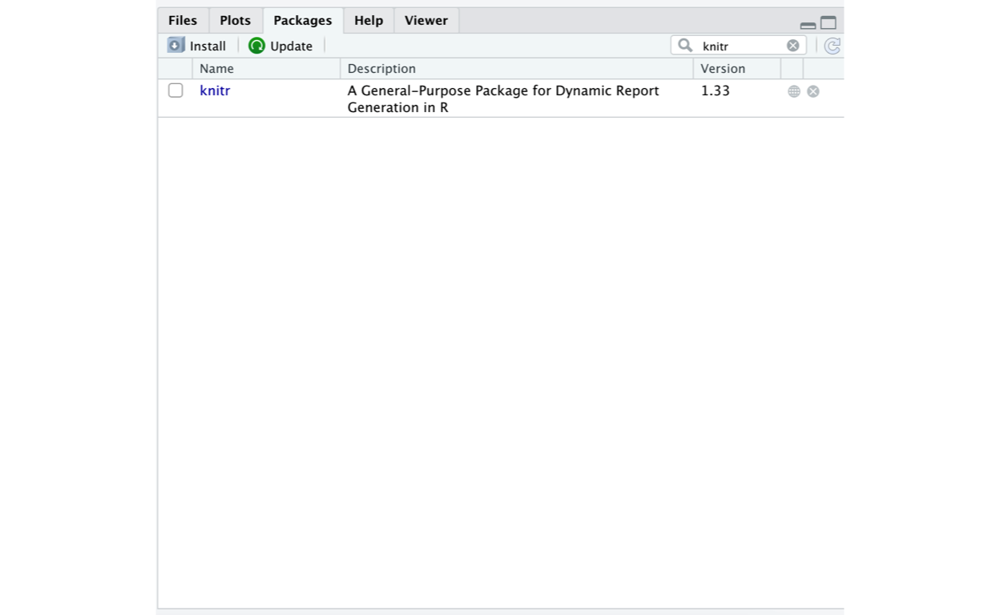
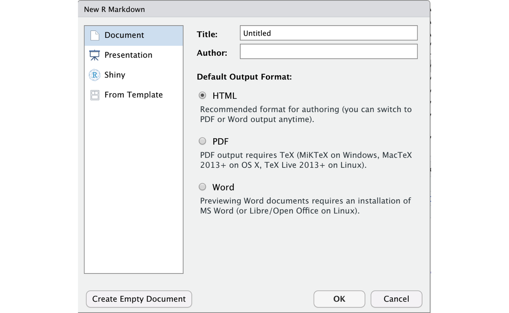
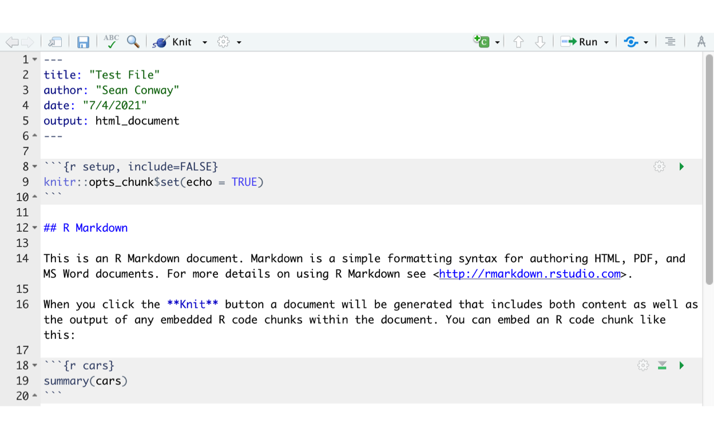
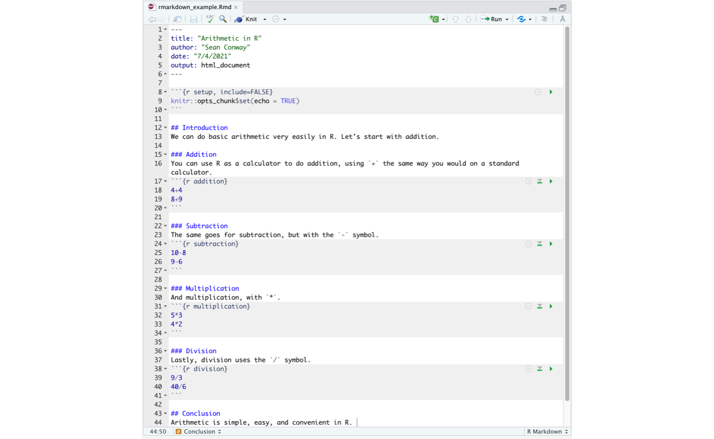
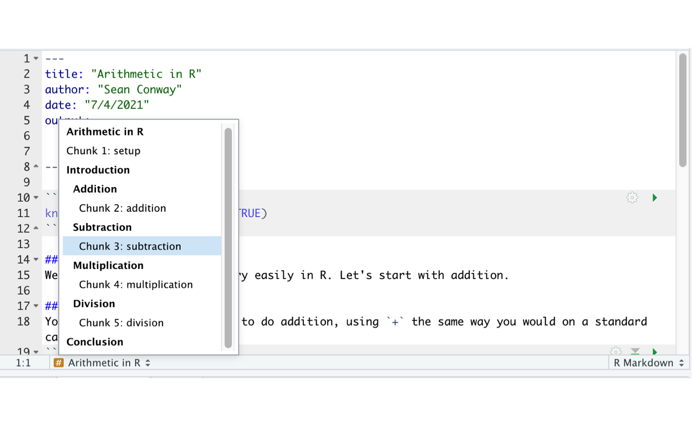
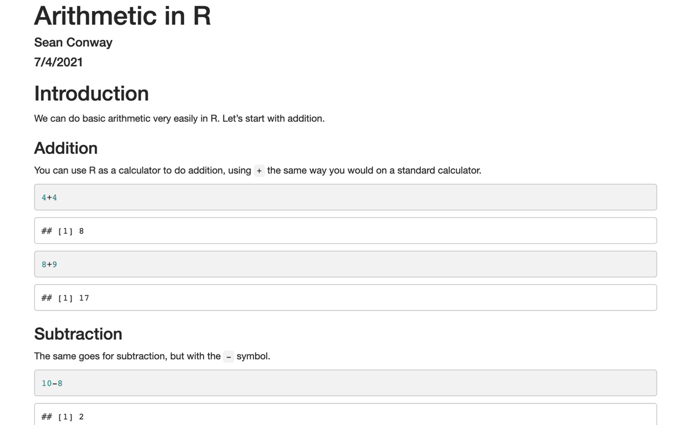
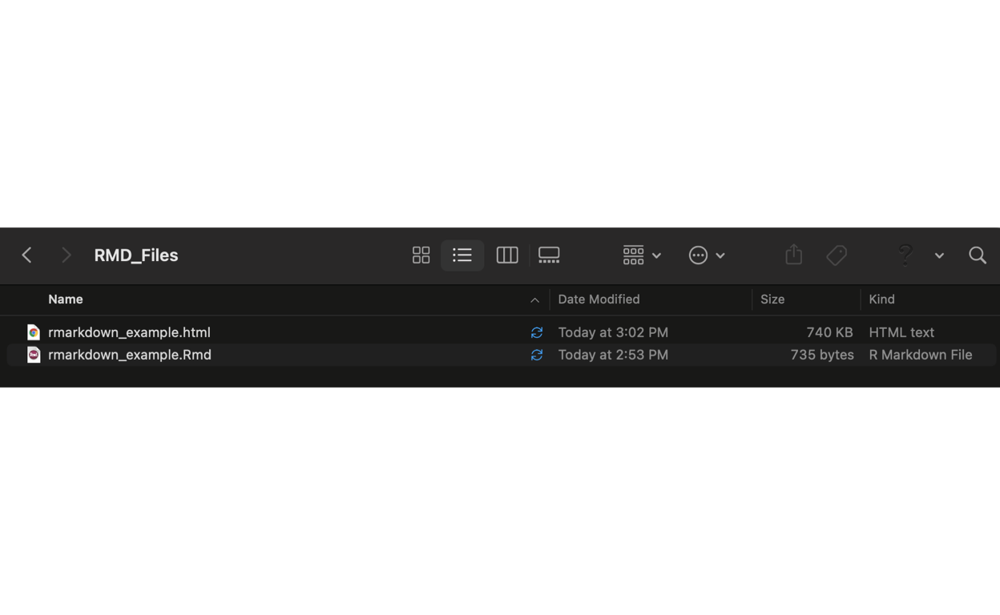
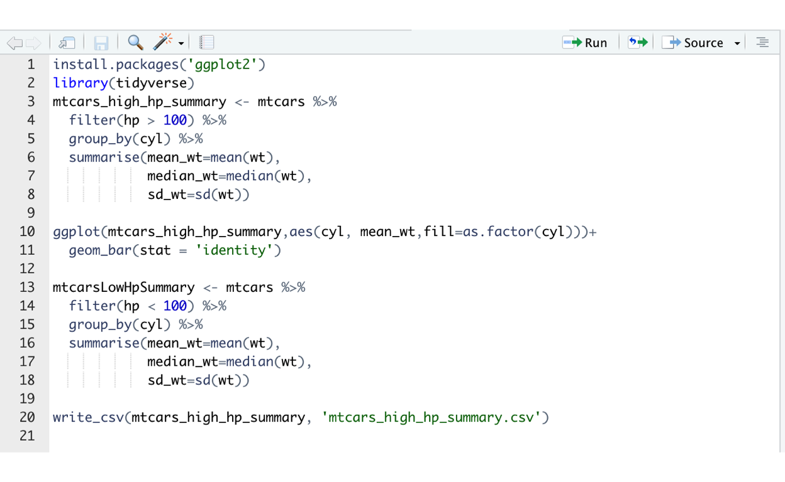
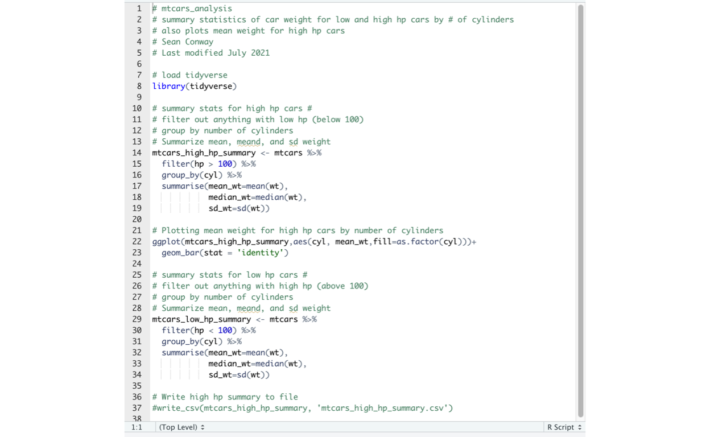

In this tutorial, you wil learn about RMarkdown, a tool for combining R code with written text to create clean, well-formatted, and reproducible documents.
You will also learn some best practices for coding in R, including variable naming and annotating your code with comments.
Before we get started with RMarkdown, we need to make sure that knitr is installed. knitr is the package that RMarkdown runs on. You will need to open your RStudio desktop application for this.
If you have not previously installed knitr, run the following line of code in your RStudio console.
install.packages('knitr')If you’re unsure if you have knitr installed, you can always search for it in your packages:

Now that we’re all set with knitr, we can get to learning about RMarkdown.
RMarkdown is a tool that allows us to incorporate code, plain text, and custom formatting to create easily readable (and reproducible) documents. RMarkdown is based on Markdown, a well-known markup language.
Let’s get started. To open up an RMarkdown file in RStudio, click File->New File->RMarkdown. You should then see a window like this:

There are several types of files you can create with RMarkdown. The most common is a document in html format (meaning that it can be opened as a local file on a web browser), though you can also create a PDF or a Word document. 1
Let’s try creating a regular html file. After putting in a title and author, we press OK. The new document then looks something like this:

In lines 1-6, we have our YAML (Yet Another Markup Language) header, where we store important information that will be on our document header, as well as the type of document our file will output (in this case, html). Generally speaking, the YAML header stores metadata about our file.
In lines 8-10, we have our setup section. There are a myriad of ways to set up your document. In our case (the default set up) the only specification is created using opts_chunk$set(echo=TRUE), which tells RMarkdown to “echo” the R code we input throughout the document (i.e., show the code itself in addition to its results). If you need to use any outside R packages in your document, you should load them in your setup section (e.g., library(ggplot2)).
Every RMarkdown document comes with default text that can (and usually should) be deleted. However, we can examine the default text and see three important types of sections: a header (line 12), some plain text (lines 14-16), and an R code chunk (lines 18-20).
We specify a header with ## followed by our header text. Note that we can include further sub-headers by adding more # symbols. The more #s, the smaller the sub-header text.
We can add chunks of code by typing three backticks (“```”), followed “{r}”. We can then include as much R code as we want in the chunk (i.e., insert more lines as we need). Finally, to end the code chunk we simply type three additional backticks.
Here, we will go through an example of using RMarkdown in practice.
Let’s say we want to show an R beginner how to use R to do arithmetic. We can set up an RMarkdown document to present the material in an aesthetically pleasing way, so the reader is not overwhelmed by a regular R script and can focus on the content.

Looking at our document, we can see our YAML header, which contains information about the title, author, date, and output format.
Our setup section is simple. We have no real changes to make to the default document setup, and our code requires no packages, so we have no libraries to load.
We include an introduction header, as well as four sub-headers (for each type of basic arithmetic). Finally, we have a conclusion header.
Within each arithmetic sub-header, we include some plain text and some R code. We even name each of our R code chunks (i.e., arithmetic, subtraction, multiplication, and division). This can make it easier to navigate our code. We can even use the navigator on the bottom left of the panel to see each of our named code chunks, along with the headers they fall under.
If you want to reference an R function or operator in the text, you can do so using backticks. This creates a different looking font that will let the reader know that an R function is being referenced. See line 16 for an example of this - note the backticks around the “plus” sign.

Our file itself has a “.Rmd” extension, rather than a “.R” extension. Rmd is a short for RMarkdown. Files with a .R extension are referred to as R scripts, while files with a .Rmd extension are referred to as RMarkdown files.
To actually create our polished document, we will use the Knit button, located neared the top of the page. If there are no issues, we will get a nice-looking html file. Note that RMarkdown requires the file to be saved before knitting.

Wallah! We have a pretty and easily readable document that can be distributed to others.
You will find that after knitting a file, there is now a .html file in your folder, in addition to the .Rmd file. The html file is the polished document that can be distributed to others, while Rmd file contains the source code that created the file.

Lastly, make sure to re-knit everytime you make changes to the .Rmd file. The polished document will only reflect the changes of the last time it was knit.
There are numerous ways to customize your RMarkdown files. You can create readable documents, presentations, and even interactive applications! This makes it nearly impossible to include everything about RMarkdown in a single tutorial.
With that being said, there are numerous helpful resources for using RMarkdown. In particular, the RMarkdown Cheatsheet, created by RStudio, is an invaluable resource.
Make sure to also check out Chapters 27, 29 and 30 in your textbook, R for Data Science by Hadley Wickham (available free online). These chapters are invaluable for understanding the power of using RMarkdown for data science.
Finally, those interested in a more detailed look at RMarkdown can check out The RMarkdown Cook Book by Xie, Dervieux, & Riederer (2021), also available free online.
We will wrap up this tutorial with a discussion of best practices when using R for data sciences. While we mainly discuss .R scripts (files with a .R extension), the same practices apply to RMarkdown files (files with a .Rmd extension).
Comments are made in R using #. R will not evaluate any text after the # on a line of code, so comments allow us to include information about our code without crashing our scripts.
1+1 # this is a comment. Because it comes after the code, R still evaluates 1+1.## [1] 2# 3+5 see how R doesn't evaluate this?Comments are useful for writing notes about your code and marking off things that need to be fixed later.
When writing an R script, it is crucial that you be thorough with comments. You want anyone to be able to open up your script and get a general idea of what the code does through reading your comments. Be as verbose as possible when commenting. Nothing is worse than an under-commented script!
Here’s an example of well commented code:
# univariate linear regression, hp is predictor, wt is dv
summary(lm(wt~hp, data=mtcars)) You should also use comments to store information about the script for any future users (including yourself). In particular, insert a header containing 1) the name of the script, 2) the author (you), 3) the date of last changes to the file, and 4) a brief description of what the code in the file does.
Below is an example:
# data_analysis_exp_1.R
# data analysis from Experiment 1 from Fall 2020.
# linear regression with multiple predictors
# Sean Conway
# Last modified - July 2021Notice how anyone who opens up this hypothetical file quickly knows exactly 1) what data the file is analyzing, 2) what analysis was done, 3) the original author of the code, and 4) when the code was last modified. These information saves the user invaluable time, so they can focus on the results of the code and/or modifying the code as they need.
These practices are not only to help others - they are to help you. You may open a script after a year or two, having completely forgotten the code you wrote. When this happens, trying to figure out what the code does can be a real headache. A well-commented script with a clear heading can prevent such an issue.
Lastly, whenever possible, before each section of code, describe the task that the code performs with a few comments.
When naming variables in R, consistency is crucial. There are several methods of naming variables, including camelCase (no separations between words, first letter of each word capitalized following the first word) and snake_case (underscores used to separate words). You can also use . to separate words (e.g., my.data.1).
Whichever method you choose, please be consistent. Your collaborators will appreciate it, and it will make your code more readable.
We can all agree that it’s rude to make changes to someone else’s computer without their permission. This also applies to R scripts.
We sometimes need to run code that makes changes to our own computer (e.g., installing packages, changing the working directory, writing results to new files, etc.). When doing so, it’s crucial that we either do so in the console, or, when it’s necessary to do so in a script, comment out the code so that anyone else running the code doesn’t unwittingly make changes to their computer.
For example, if you need to install a new R package - do so in the RStudio console. This operation only needs to be done once, and the result is the same regardless of where you run it. So do it in the console.
It’s often necessary to save results of a data analysis to your computer, such as writing results to a .csv file or saving a .png file of a graph you made. If you do so, run the code in a script (so you know WHERE these results came from), but then promptly comment it out. This allows others to run the code without accidentally creating new files on their computer, while still allowing them the option to save the results.
Here’s an example of an R script that uses bad practices:

There’s several bad practices in the script above.
install.packages and write_csv makes changes to the user’s computer. This is frowned upon.snake_case, while in line 13, the script uses camelCase. This adds to the script’s difficulty to understand.Below is a modification to the script that fixes these bad practices.

install.packages is removed, and write_csv is commented out. The user can still remove the # to run the code if they wish, but this is left up to them.snake_case is now used for all variables.# for each comment.You’ve now learned about RMarkdown and best practices for coding in R.
Tutorial 1: R Basics and Assigning Variables
+,-,*,/==,>,<,>=,>=<-c()Tutorial 2: Reading and Describing Data
head()dim()colnames()select()starts_with()ends_with()contains()table()prop.table()gather() and spread()